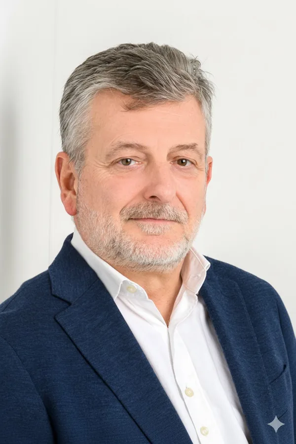

Patrick Langlais · Versailles
Je ne vends pas d'IA.
Je vous dis si elle vaut le coup.
Trente-cinq ans à mesurer le risque en finance de marché m'ont appris une chose : on ne décide pas sans chiffre. J'applique la même règle à l'intelligence artificielle — le business case d'abord, l'outil ensuite. Parfois ma conclusion, c'est « n'y allez pas ». Vous l'aurez quand même.
Au bout du fil, ce sera moi — pas un formulaire, pas un commercial, pas un chatbot.

Le constat
Ce que je vois en arrivant chez vous
L'IA n'échoue presque jamais pour des raisons techniques. Elle échoue parce que personne n'a pris le temps de cadrer, de prioriser, de piloter. J'ai vu des budgets entiers partir dans des outils que plus personne n'ouvre six mois plus tard.
-
Vous ne savez pas par quoi commencer
Faute de cartographie de ce que font réellement vos équipes, on optimise ce qui se voit — rarement ce qui coûte.
-
Personne ne vous a chiffré le retour avant de lancer
Un euro engagé sans business case préalable est un euro à risque. En salle des marchés, ça ne passerait pas. Ici non plus.
-
Vous n'avez pas les moyens de recruter une équipe IA
Vous n'en avez pas besoin. J'active un réseau d'experts à la demande, sans un poste fixe de plus sur votre masse salariale.
-
Vous avez déjà testé, et ça n'a rien donné
Parce que ces solutions partaient de la technologie disponible, pas de vos métiers ni de vos chiffres.
La méthode Index Iceberg
Le travail qui compte est celui que personne ne déclare
En réunion, vos équipes décrivent leur métier tel qu'il est censé fonctionner. Le reste — les reprises, les relances, les copier-coller entre deux logiciels, les vérifications de dernière minute — ne figure sur aucune fiche de poste. C'est pourtant là que se trouve l'essentiel de votre gisement.
Ce qui est déclaré
Les tâches visibles, celles qu'on décrit spontanément. C'est ce que la plupart des projets IA tentent d'automatiser.
Ce qui est immergé
Le travail réel, invisible et non mesuré. C'est là que l'IA paie — à condition d'aller le chercher méthodiquement.
Je passe quelques semaines à observer et à mesurer ce travail immergé : temps réel passé, coût, qualité. J'en sors une liste de chantiers classés par impact et par effort, chacun avec son chiffre. Vous décidez ensuite avec les mêmes informations qu'un comité d'investissement — pas avec une promesse commerciale.
Travailler ensemble
Trois façons d'entrer, selon où vous en êtes
Elles s'enchaînent naturellement, mais chacune se tient seule. Rien ne vous oblige à prendre la suivante.
Atelier Déclic IA
2 à 3 heures · visio ou chez vous
On regarde ensemble ce que l'IA peut faire pour votre entreprise — la vôtre, pas « les PME » en général. Vous repartez avec trois à cinq cas d'usage concrets et une idée nette de ce qui ne vous concerne pas.
Voir le détail →Diagnostic Index Iceberg
3 à 6 semaines · livrable présenté au CODIR
L'audit complet de vos processus, puis une feuille de route sur 6 à 12 mois classée par retour sur investissement. Un business case par chantier, chiffré, avant que vous n'engagiez quoi que ce soit.
Voir le détail →Pilotage IA & freelances
Forfait ou régie · jusqu'au résultat
Je coordonne les experts, je tiens les délais et je pilote jusqu'au gain mesuré. Vous gardez la main sur les décisions, sans avoir à monter d'équipe interne.
Voir le détail →Gratuit · trois minutes
Estimez votre Indice Iceberg
Quelques questions pour situer la part de travail invisible dans votre organisation. Résultat immédiat, sans inscription.
Références
Quatre missions, quatre résultats mesurés
Les noms restent confidentiels tant que mes clients ne les ont pas rendus publics. Les chiffres, eux, sont ceux du terrain.
Questions fréquentes
Ce qu'on me demande souvent
Que fait Think'UP pour les PME et les ETI ?
J'aide les dirigeants à repérer les usages de l'IA réellement rentables chez eux, à construire le business case qui va avec, puis à piloter les projets jusqu'au retour mesuré. Pas de licence à vendre, pas de techno imposée.
Qu'est-ce que la méthode Index Iceberg ?
C'est ma façon de cartographier le travail réel : les tâches visibles, et surtout celles qu'aucun outil ne mesure. On chiffre le temps qu'elles consomment, puis on classe les automatisations possibles par impact, effort, risque et retour attendu.
Où intervenez-vous ?
Je suis basé à Versailles et j'interviens partout en France, sur place ou à distance selon ce que la mission demande. Le diagnostic suppose des phases d'observation dans vos locaux.
Premier échange, sans engagement
Trente minutes pour savoir si ça vaut la peine
Vous me racontez où vous en êtes, je vous dis franchement ce que je vois — y compris quand la réponse est « ce n'est pas le moment ». Pas de présentation, pas de jargon, pas de relance commerciale ensuite.
Choisir un créneau →On ne pilote pas ce qu'on ne mesure pas. C'était vrai en salle des marchés. Ça l'est tout autant pour l'IA.
Patrick Langlais Fondateur de Think'UP · Versailles